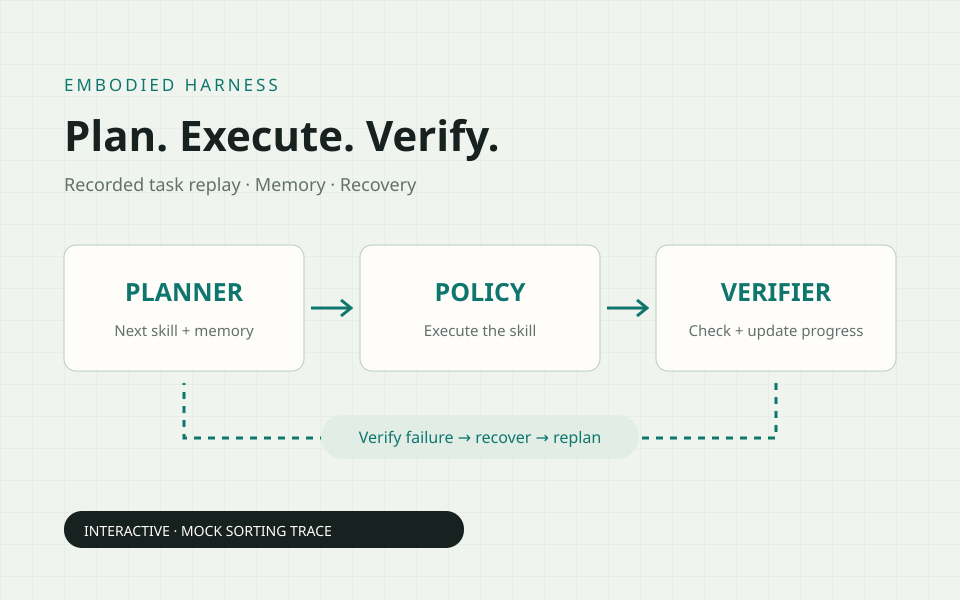

Embodied AI Engineer
从 π0 到 π0.6，把每一代 VLA 跑上真机。
独立复现 π0.6 RECAP 并在真机落地：策略从自主 rollout 与专家纠错中持续学习，标杆手机插拔任务吞吐约翻倍、失败率约减半。在 π0.5 中融合触觉，把双臂精细操作成功率从 30% 提到 70%。覆盖机械臂、灵巧手、人形三类本体。
≈2×
π0.6 RECAP 真机自改进：标杆任务吞吐约翻倍、失败率约减半
30%→70%
双臂精细操作成功率：π0.5 融合触觉 + RTC 异步推理
3 类
机械臂、灵巧手、人形机器人平台适配与部署经验
No.1
本科综合排名第一 · 绩点 3.98/5 · 2024 年国家奖学金
工作与教育
机器人实践 + 软件工程训练
2026.01 - 至今
具身智能全栈工程师
FMC3-Robotics · 上海
- 独立负责 π0.6 RECAP 真机自改进项目：标杆手机插拔任务吞吐约翻倍、失败率约减半。
- 从零搭建机械臂 + 智元灵巧手双臂平台，融合触觉使精细操作成功率从 30% 提升至 70%。
- 将操作策略迁移至傅利叶 GR2 人形机器人，接入 VLM 实现自然语言任务分解与多技能调度。
2026.09 - 2029.06
华东师范大学
软件工程硕士 · 统招非全日制 · 具身智能方向
- 2025 年毕业后专注备考，一次考取；2026.09 入学，边工作边攻读。
2021.09 - 2025.06
江苏科技大学苏州理工学院
计算机科学与技术 · 绩点 3.98/5 · 综合排名第一
- 2024 年国家奖学金；担任智能小车实验室负责人，参与智能车、边缘 AI、移动机器人等竞赛与项目。
项目经历
从策略到真机，从单臂到人形
π0.6 RECAP 真机自改进（松灵 PiperX 单臂）
独立负责。在松灵 PiperX 单臂平台复现并落地 π0.6（RECAP）自改进方案，以手机插拔精细操作为标杆任务，让策略在真机部署中通过自主 rollout 与专家干预纠错持续从经验中学习，逐步超越示教水平。
- 完成机械臂、夹爪、多路相机联调与遥操作示教链路，采集并清洗 200 条 demonstration 作为冷启动数据。
- 复现 RECAP 流程：offline RL 预训练并引入 advantage conditioning，融合示教、自主采集与专家干预三类异构数据。
- 部署后采集 autonomous rollout、记录失败并注入人工纠正，微调 value function 优化 advantage 估计；动作分块 + 异步推理降低执行延迟，完成多轮真机自我改进迭代。
π0.6
RECAP
Advantage Conditioning
Offline RL
Action Chunking
异步推理
机械臂 + 智元灵巧手双臂协作操作
基于 LeRobot 从零搭建机械臂 + 带触觉感知智元灵巧手的双臂协作平台，封装硬件接口形成可复用机器人适配层，并引入触觉反馈显著提升精细操作稳定性。
- 独立完成 teleoperation / data collection / inference / replay 四大模块适配，沉淀可复用机器人适配层。
- 采集双臂协同抓取与精细操作数据，基于 ACT、Diffusion Policy、π0.5 完成策略训练与真机部署。
- 在 π0.5 中引入 tactile encoder 融合触觉信号；结合 RTC 与异步推理降低延迟，提升双臂协同的时序一致性。
LeRobot
ACT
Diffusion Policy
π0.5
Tactile Encoder
LoRA
RTC
30% → 70%
双臂精细操作成功率提升
4 大模块
遥操作 / 采集 / 推理 / 回放适配层
傅利叶 GR2 人形机器人货物搬运与技能调度
将单臂平台操作策略迁移适配至傅利叶 GR2 人形机器人，打通本体—感知—控制—推理—技能调度全链路，并接入多模态大模型实现高层任务分解与闭环执行。
- 设计并安装 GR2 腕部相机支架，使用外骨骼遥操作采集分拣搬运数据，编写数据集格式转换与训练脚本。
- 基于 π0 与 GR00T 完成操作策略训练与验证，适配 get_state / send_action 接口并编写 inference server。
- 结合 DDS 深度集成 RoboOS，接入 RoboBrain VLM，实现自然语言任务的高层分解与多技能调度编排。
- 在 Isaac Sim 中基于 GR00T 验证宇树 G1 全身 loco-manipulation 搬运，检验策略跨人形本体的可迁移性。
π0
GR00T
DDS
RoboOS
RoboBrain VLM
Unitree G1
2 款人形
傅利叶 GR2 真机 · 宇树 G1 仿真
端到端
VLA 部署到货物搬运闭环验证
S101 单臂抓取策略验证
围绕 S101 机械臂"异形物体夹取入盒"任务，完成数采、训练到真实机械臂推理部署的端到端验证。
- 完成机械臂、夹爪、相机与示教采集链路联调，采集 500+ 条 demonstration。
- 基于 ACT、Diffusion Policy、π0 开展策略训练与验证，完成模型训练、推理部署和闭环测试。
- 对比不同策略在异形物体抓取、夹取入盒场景下的动作稳定性、任务完成效果与部署流程。
ACT
Diffusion Policy
π0
异步推理
真实部署
500+
示教数据采集
3 种策略
ACT / DP / π0 对比验证
精选 Demo
真机部署与 sim2real 演示
能力矩阵
工程、模型、数据、部署四线闭环
数据采集与数据集工程
Teleoperation、外骨骼采集、多相机数据、数据清洗、Replay、LeRobot Dataset、Demonstration 管理。
机器人平台适配
完成机械臂、灵巧手、人形机器人平台的 get_state / send_action、相机、夹爪、触觉与控制接口适配。
策略模型训练
基于 ACT、Diffusion Policy、π0 / π0.5 / π0.6、GR00T 开展策略训练与对比，复现 RECAP 的 offline RL 与 advantage conditioning 自改进流程。
真机推理与实时执行
构建 inference server，支持异步推理、RTC、Action Chunk 执行、延迟优化与真实设备闭环测试。
多模态感知与融合
围绕 RGB 相机、腕部相机、触觉 encoder、VLM/RoboBrain VLM 进行多模态状态输入与反馈融合。
技能调度与任务编排
集成 RoboOS Skill 调用、高层任务分解、多技能调度与分拣流程控制。
评估与失败分析
关注成功率、动作稳定性、Baseline 对比、失败案例归因、数据分布检查与策略泛化表现。
AI 辅助工程开发
结合 Cursor、Claude Code、Codex 提升机器人接口适配、数据脚本开发、训练调参与实验迭代效率。
竞赛与荣誉
算法、机器人与综合能力积累
奖学金
2024 国家奖学金
综合排名第一；连续三次人民奖学金、三好学生，国家励志奖学金。
边缘 AI
ICAN 大学生创新创业大赛「边缘 AI+行业」挑战赛
队长，全国二等奖。
智能车
全国大学生智能车竞赛智慧物流创意组
队长，全国三等奖 / 华东赛区二等奖。
模型训练
全国大学生智能车竞赛智慧医疗创意组
负责模型训练与量化，华东赛区二等奖。
机器人
航天杯移动机器人 AI 创新技术挑战赛
队长，全国三等奖。
科研实践
江苏省大学生创新创业训练计划项目
期刊：基于 OpenMV 的新型智能门锁设计。
Demo 与系统演示
真实机器人、仿真与视觉控制演示
视频无法播放？在 GitHub Releases 中打开
Demo 10 · PiPER00:23
PiPER 双臂 sim2real 抓笔交接
左右对照同一抓笔交接任务：左侧为孪生场景中的官方专家示范，右侧为混训策略的真机成功回合（2 倍速）。仿真先结束后保持末帧，完整展示抓笔、交接与放入笔筒。
平台双臂 PiPER · 三路 RealSense
策略仿真 / 真机数据混训
模式仿真专家 / 真机策略对照

打开交互式任务回放
Demo 11 · Embodied Harness交互回放
Embodied Harness 长任务调度
将规划器与机器人策略连接起来，管理子任务、记忆、结果校验和失败恢复。交互回放展示模拟分拣记录中的抓空重试与掉落后重新规划。
平台模型无关的任务运行时
策略VLM 规划 / VLA 执行可插拔（本回放为 mock）
模式模拟分拣调度记录回放
视频无法播放？在 GitHub Releases 中打开
Demo 12 · BEHAVIOR-1K01:31
BEHAVIOR-1K 微波炉爆米花复现
基于公开代码与权重复现微波炉爆米花长任务，完成开门、抓取、放入与关门。视频来自本地成功回合；首轮 10 个实例完成 4 个，用于复现与失败分析。
平台BEHAVIOR-1K · 仿真
策略公开方案与权重复现
模式本地首轮 4 / 10 成功
视频无法播放？在 GitHub Releases 中打开
Demo 0100:18
双臂灵巧手小物品精细抓取
双臂平台完成小目标定位、夹取与放置，展示灵巧手精细控制与真实任务稳定性。
平台
双臂灵巧手平台
策略
π0.5 + 触觉反馈
模式
真实平台推理
双臂协作
灵巧手
精细操作
视频无法播放？在 GitHub Releases 中打开
Demo 0200:28
视觉关键点 retargeting 到灵巧手
通过视觉提取手部特征点与关节姿态，并 retargeting 到机器人灵巧手，实现稳定、准确的手内对指控制。
平台
RGB 视觉 + 灵巧手
策略
关键点提取 + Retargeting
模式
手内对指控制
手部关键点
Retargeting
手内对指
视频无法播放？在 GitHub Releases 中打开
Demo 0500:43
Minimax 井字棋 + π0.5 棋子放置
井字棋决策使用 minimax 算法，棋子移动由 π0.5 结合视觉 prompts 控制放置位置，用视觉定位补足语言跟随性差的问题。
平台
人形机器人交互平台
策略
Minimax + π0.5
模式
视觉 prompts 放置
Minimax
π0.5
视觉 prompts
视频无法播放？在 GitHub Releases 中打开
Demo 0600:58
π0.5 JAX 纸巾分拣
基于 π0.5 JAX 版本完成纸巾分拣任务，结合异步推理与 RTC 优化执行链路，提升真实平台动作连续性与响应效率。
平台
双臂真实平台
策略
π0.5 JAX
模式
异步推理 + RTC
π0.5 JAX
异步推理
RTC
视频无法播放？在 GitHub Releases 中打开
Demo 0701:02
π0.6 RECAP 手机插拔精细操作
基于 π0.6 RECAP 强化学习完成手机接口插入与拔出，验证真实平台在小间隙、强接触约束下的精细操作稳定性。
平台
单臂真实平台
策略
π0.6 RECAP 强化学习
模式
手机插拔精细任务
π0.6 RECAP
强化学习
手机插拔
视频无法播放？在 GitHub Releases 中打开
Demo 0800:24
openpi 复现 π0.5 Subtask 长任务拆解
基于 openpi 复现 π0.5 中提出但官方未开源的 subtask 子任务拆解能力，将双杯放置长任务分解为可跟踪的阶段，并在仿真 rollout 中完成执行。
平台
openpi 仿真环境
策略
复现 π0.5 Subtask
模式
双杯放置长任务
openpi
子任务拆解
长任务
视频无法播放？在 GitHub Releases 中打开
Demo 0900:30
宇树 G1 全身 loco-manipulation 搬箱子
基于 Isaac Sim 中的宇树 G1 完成全身 loco-manipulation 搬箱子任务，结合 GR00T VLA 推理实现全身协同控制与目标搬运。
平台
Isaac Sim
策略
GR00T VLA 推理
模式
宇树 G1 全身搬箱子
宇树 G1
Isaac Sim
GR00T VLA
全身控制
运动控制
人形机器人强化学习步态
视频无法播放？在 GitHub Releases 中打开
Loco 01最新仿真00:12
宇树 G1 崎岖地形强化学习步态
在 MuJoCo Playground 中用 PPO 从零训练宇树 G1 的行走策略，采用非对称 Actor-Critic（本体观测 103 维、特权观测 216 维，网络 512-256-128），累计 1.81 亿仿真步；策略在随机崎岖地形上跟随速度指令行走并维持平衡。
平台
MuJoCo Playground · 宇树 G1（29 自由度）
策略
PPO · 非对称 Actor-Critic · 1.81 亿步
模式
崎岖地形速度指令跟随
宇树 G1
强化学习
PPO
崎岖地形